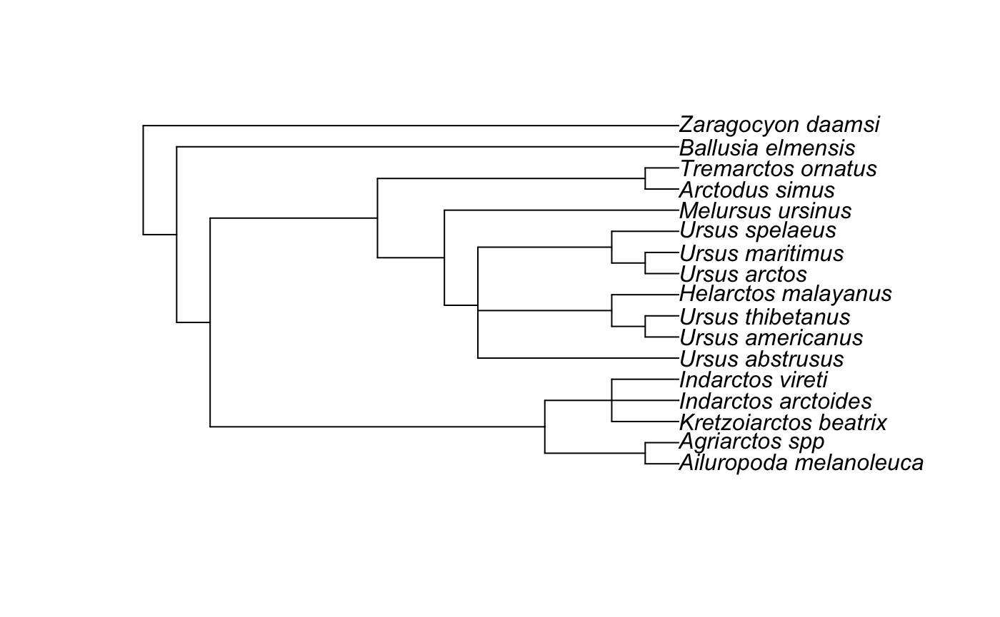

2018-07-27
vignette.Rmdlogo
treeStartR
Phylogenetic trees, and particularly time-scaled phylogenetic trees, are increasingly estimated using parameter-rich models of evolution [@catmodel; @wright2016] and models incorporating macroevoloutionary processes [@fbd]. Finding a starting tree with a computable likelihood to perform a Bayesian MCMC under these complex models can be a challenge, particularly when when estimation involves many taxa, large datasets, and missing data.
Different phylogenetic estimation packages allow users to find starting trees in different ways, such as estimating a tree under parsimony (@raxml8) or neighbor-joining [@beast2], randomly adding taxa to the tree [@beast2; @raxml8], or allowing the user to specify the tree. Addition of taxa is usually performed based on data - that is, using an algorithm (such as parsimony or neighbor-joining) to add the tips to the tree. However, in analyses of the fossil record, specimens may be included for which there are no molecular or morphological characters available, but the taxonomy of the specimen is known via expert opinion. This is the case with many specimens harvested via repositories such as the Paleobiology Database.
The purpose of this package is to allow users to efficiently add taxa to a given tree to generate a reasonable starting tree. Functions in this package allow taxa to be added to a tree according to either their taxonomy (if other specimens from the same genus are present) in function present_tippr, at random (rand_absent_tippr), or via other user-specified groupings (text_placr). The package uses functions from phytools [@phytools] and ape [@ape].
Dependencies
treeStartR depends on phytools.
## Loading required package: ape## Loading required package: mapsUsage Example
First, we need to load a list of the total set of taxa present in the tree. The “total set” refers to any taxa that will be included in your analysis. This can be either a CSV or a TSV file. A sample list, bears, has been provided as part of the bears data object, but you can also generate one using the function dataf_parser.
Next, we find out which of the taxa from our total set are not represented on the tree already. This function takes as input a tree, with or without branch lengths, but without annotations (such as 95% HPDs). It also takes the total set of taxa generated by dataf_parser:
## [1] "Ailurarctos_lufengensis" "Indarctos_punjabiensis"
## [3] "Kretzoiarctos_beatrix" "Parictis_montanus"
## [5] "Ursavus_brevirhinus" "Ursavus_primaevus"
## [7] "Ursus_abstrusus"Adding tips with congeners
Finally, we add the tips that are not present to the tree. If there are other representatives of the same genera as an absent taxon (for example, adding an additional “Ursus” species to the example tree), those taxa will be used to place the tip. If there are multiple species of the genera, the new tip will subtend the most recent common ancestor of the tips already on the tree. If there is only one representative, the tip will subtend the parent node of that taxon.
## Adding tips with congeners on tree:Indarctos_punjabiensis## Adding tip via MRCA at 25## Adding tips with congeners on tree:Ursus_abstrusus## Adding tip via MRCA at 30
Adding tips manually
We can also add the tips that have no congeners. This function will ask for input. A pop-up will be produced, showing node labels. When the program asks for input, you will tell it what node you would like the tip to subtend:
Adding tips at random
Or, if there are no congeners, you may choose to add tips at random:
## Adding tips at random: Ailurarctos_lufengensis## Adding tips at random: Kretzoiarctos_beatrix## Adding tips at random: Parictis_montanus## Adding tips at random: Ursavus_brevirhinus## Adding tips at random: Ursavus_primaevus
Adding tips via CSV
Lastly, you may have a TSV file that specifies the tips to be added, and a taxon set. treeStartR will locate the MRCA of the taxon set, and add the tips subtending that node.
## Placing tip Kretzoiarctos_beatrix## via relatives Indarctos_arctoidesIndarctos_vireti## at node 25## Placing tip Ursus_abstrusus## via relatives Ursus_arctosUrsus_spelaeusUrsus_americanus## at node 30